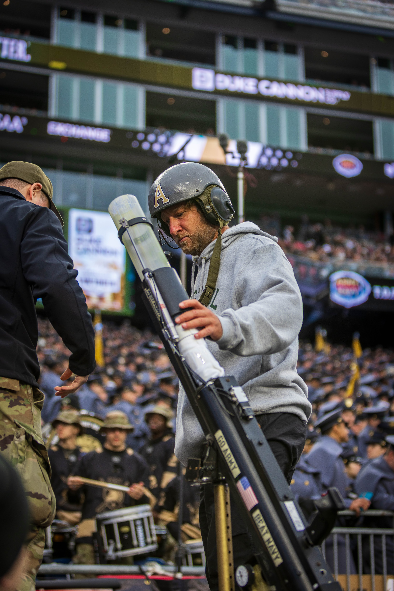

Few figures in modern American digital media command as much real-time curiosity as Barstool Sports founder Dave Portnoy. Known universally to his legion of fans as "El Presidente," Portnoy has engineered a media juggernaut built on absolute transparency, unapologetic opinions, and viral "One Bite" pizza reviews. Yet across search engines and social media feeds, one persistent query outpaces almost all others: who is Dave Portnoy girlfriend right now?
For readers seeking a direct answer: as of 2026, Dave Portnoy is in a confirmed relationship with Camryn D’Aloia, a Massachusetts native and marketing communications professional. After first sparking intense dating rumors during the 2024 NBA Playoffs, Portnoy officially confirmed their partnership during an appearance on the Barstool travel podcast Drop a Pin, and the two have since become a familiar courtside presence at NBA and WNBA games.
However, understanding Portnoy's current romantic life requires looking deeper into the unique dynamics of his high-profile lifestyle, his navigation of public scrutiny, and the relationship milestones that preceded this chapter. Here is the definitive, up-to-date look at Dave Portnoy's girlfriend, their shared lifestyle, and his full dating timeline.
Who Is Camryn D'Aloia? Background, Career, and Upbringing
Unlike several of Portnoy’s previous partners who were prominent Instagram models or full-time lifestyle influencers, Camryn D'Aloia represents a distinctly more private and grounded persona. Born in 1999 and raised in Framingham, Massachusetts, she shares deep New England roots with Portnoy, who grew up in nearby Swampscott.
D'Aloia pursued her higher education at Framingham State University, where she earned a degree in corporate communication and public relations. Prior to stepping into the celebrity spotlight, she worked professionally in digital marketing, social media community management, and brand strategy for regional East Coast businesses. Friends and associates describe her as poised, exceptionally down-to-earth, and deliberately reserved when it comes to chasing viral fame.
While many internet personalities thrust into high-profile relationships immediately monetize their newfound audience, D'Aloia has chosen to maintain a relatively guarded social media presence. Her understated public approach has earned praise among longtime Barstool fans, who appreciate that she respects Portnoy's media obligations while keeping their domestic life out of unnecessary clickbait cycles.

The Courtside Debut: How Dave Portnoy and Camryn D'Aloia Met
The public first caught wind of the budding romance in late April 2024. During Game 2 of the Boston Celtics' opening-round playoff clash against the Miami Heat at TD Garden, television broadcast cameras repeatedly panned to Portnoy sitting courtside in his customary high-energy demeanor. Seated directly beside him was a stylish blonde woman whom fans on TikTok and Reddit quickly identified as Camryn D'Aloia.
Within hours, clips from the broadcast generated millions of impressions across social media platforms. Fans dissected their interactions, noting their relaxed body language and shared excitement for Boston sports. Despite the intense digital buzz, Portnoy remained characteristic of his newer media strategy: he neither denied nor exaggerated the speculation, letting the relationship develop naturally behind closed doors.
Over the subsequent twelve months, the pair were spotted together at an array of premier sporting and entertainment venues. From sitting front-row at New York Liberty and Connecticut Sun WNBA games to attending high-profile boxing matches and charity galas, their public comfort level steadily blossomed. When traveling between his estates, Portnoy frequently relies on organized travel gear and audio tech to manage long business flights and uninterrupted podcast production.
Addressing the Age Gap: Portnoy Speaks Out on the Drop a Pin Podcast
In April 2025, during an episode of the Barstool Sports podcast Drop a Pin hosted by Donnie Does and Uncle Chaps, Portnoy officially put all speculation to rest by openly discussing his relationship with Camryn D'Aloia. A major focus of internet discussion had centered on their 22-year age difference—Portnoy having been born in March 1977 and D'Aloia in 1999.
Rather than dodging the topic, Portnoy addressed the public commentary with his trademark candor. He explained that in real life, age numbers fade when two adults share authentic chemistry, mutual respect, and common cultural sensibilities. Having both grown up in Massachusetts, they share an intuitive shorthand regarding family values, sports fandom, and New England lifestyle quirks.
Portnoy remarked that while online commentators frequently obsess over age gaps, the day-to-day reality within their personal circles is remarkably peaceful. Both families have been warm and welcoming, and D'Aloia's calm demeanor provides a vital anchor against the unrelenting chaos of Portnoy's fast-paced executive life.
Life Between Miami, Boston, and Nantucket: Their Shared Lifestyle
Following his monumental $1 buyback of Barstool Sports from PENN Entertainment in late 2023, Portnoy has enjoyed unprecedented creative and financial autonomy. With a personal net worth estimated well in excess of $100 million, his living arrangements reflect the luxury of modern media royalty.
Dave and Camryn divide their time across three signature locations:
- Miami, Florida: Portnoy's primary winter residence is a sprawling waterfront estate in Miami. The tropical enclave serves as a warm-weather retreat where the couple enjoys boating, dining at premier culinary hotspots, and hosting close friends.
- Nantucket, Massachusetts: In 2023, Portnoy made real estate headlines by purchasing a historic compound on Monomoy Road in Nantucket for an astonishing $42 million, setting a Massachusetts state residential record. During summer months, this coastal haven offers absolute privacy away from paparazzi and metropolitan stress.
- Boston, Massachusetts: Boston remains the emotional heartbeat of Portnoy's sports world. During NBA and NHL playoff runs, the couple frequently stays in luxury accommodations near TD Garden to support the Celtics and Bruins in person.
Throughout their time together, D'Aloia has also embraced Portnoy's famous passion for animal welfare. Fans frequently spot her helping care for Miss Peaches, the beloved rescue pit bull Portnoy adopted in early 2024 whose viral presence has raised hundreds of thousands of dollars for animal shelters across the United States.

Dave Portnoy Dating History: A Complete Timeline of Past Relationships
To fully appreciate how Portnoy arrived at his current relationship, it is valuable to examine the previous romances that shaped his personal growth and media legacy.
1. Renee Satherthwaite ("The First Lady of Barstool") — Married 2009 to 2017
Longtime followers of Barstool remember Renee Satherthwaite as an foundational figure in the company's early lore. Dave and Renee met in the mid-2000s when Barstool Sports was literally a black-and-white print broadsheet distributed by hand at Boston subway stations. Renee stood by Portnoy during the grueling, lean years of building the brand, earning the affectionate moniker "The First Lady."
The couple tied the knot in 2009. However, as Barstool underwent rapid corporate expansion and relocated headquarters to New York City, the demands of celebrity life placed significant strain on their private marriage. In early 2017, Dave publicly confirmed their separation. Remarkably, unlike many bitter celebrity splits, Dave and Renee forged an exemplary post-marital friendship. They never finalized an acrimonious legal battle, continue to co-own several property interests, and regularly collaborate on horse racing and animal rescue charities.
2. Shannon St. Clair — Early 2021
In early 2021, Portnoy was briefly linked to former Philadelphia Eagles cheerleader and reality TV personality Shannon St. Clair. The two were spotted frequenting luxury nightlife venues in Miami. While the fling became a staple of tabloid gossip for a few months, both parties quickly recognized they were looking for different things and parted ways on respectful, friendly terms.
3. Silvana Mojica — March 2021 to November 2023
Portnoy's most high-profile relationship following his separation was with Colombian-American model and influencer Silvana Mojica. Meeting in Miami in early 2021, the couple dated for nearly three years. Silvana became a regular co-star in Portnoy's social content, joining his unboxing videos, family holiday gatherings, and international vacation trips.
In November 2023, Portnoy addressed their breakup on the BFFs podcast with Brianna Chickenfry and Josh Richards. Demonstrating emotional maturity, Portnoy took full ownership of the situation, explaining that there was no betrayal or sudden hostility. Instead, the split came down to fundamental lifestyle differences: Silvana was entering a phase of life where marriage and children were imminent priorities, whereas Portnoy candidly admitted that his intense professional focus and lifestyle made him hesitant to commit to starting a traditional family.
Key Takeaways: Dave Portnoy's Relationship Blueprint
Across his marriages and relationships, Portnoy exhibits a consistent pattern: fierce loyalty to former partners, transparent public communication when milestones shift, and a growing desire in his late 40s to shield his most meaningful domestic moments from sensationalist internet exploitation.
Why Dave Portnoy Love Life Captivates the American Public
Why do millions of readers care about Dave Portnoy's romantic endeavors? Sociologists and media analysts point to three core drivers:
- The Reality-Show Nature of Barstool: Barstool Sports has functioned for two decades like an unscripted, real-time reality sitcom. Because Portnoy shares his financial losses, legal battles, and internal office arguments, his romantic status feels like an organic plotline to dedicated followers.
- The Aspirational Bachelor Aesthetic: Operating with complete creative independence and immense wealth, Portnoy lives out an unapologetic modern American bachelor lifestyle that attracts fascination from both admirers and critics.
- The Balance of Public vs. Private: In his relationship with Camryn D’Aloia, audiences see a seasoned media executive learning from the past—enjoying genuine romance while intentionally curbing the overexposure that previously burdened his private life.
Frequently Asked Questions
Who is Dave Portnoy girlfriend right now in 2026?
Dave Portnoy is currently dating Camryn D’Aloia, a Massachusetts native with a professional background in digital brand marketing. They have been together since early 2024 and officially confirmed their relationship in 2025.
What is the age gap between Dave Portnoy and Camryn D'Aloia?
There is approximately a 22-year age difference between Dave Portnoy (born March 1977) and Camryn D’Aloia (born 1999). Portnoy has publicly stated that their shared Massachusetts roots and personal chemistry make the age difference a non-issue in their relationship.
Why did Dave Portnoy and Silvana Mojica break up?
Dave Portnoy and Silvana Mojica parted ways amicably in late 2023 due to different long-term relationship goals, particularly regarding timelines for marriage and having children.
Is Dave Portnoy married?
No, Dave Portnoy is not currently married. He was previously married to Renee Satherthwaite from 2009 until their separation in 2017. The two remain close friends and philanthropic collaborators.
Where do Dave Portnoy and his girlfriend spend their time?
The couple primarily splits their time between Portnoy's oceanfront estate in Miami, his $42 million luxury compound on Nantucket Island, and Boston during sports playoff seasons.